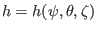

The usefulness of the contravariant form [Eq. (250] of the magnetic
field lies in that it allows a simple form of
 operator in a coordinate system. (The operator
is
usually called magnetic differential operator.) In
operator in a coordinate system. (The operator
is
usually called magnetic differential operator.) In
 coordinate system, by using the contravariant form Eq. (250), the
operator is written as
coordinate system, by using the contravariant form Eq. (250), the
operator is written as
|
 |
|
|
| |
|
|
(255) |
Next, consider the solution of the magnetic differential equation, which is
given by
where
 is some known function. Using Eq.
(255), the magnetic differential equation is written as
Note that the coefficients before the two partial derivatives of the above
equation are all independent of  and
and  . This indicates that
different Fourier harmonics in and are decoupled. As a result
of this fact, if
. This indicates that
different Fourier harmonics in and are decoupled. As a result
of this fact, if  and the right-hand side of the above equation are Fourier
expanded respectively as
and the right-hand side of the above equation are Fourier
expanded respectively as
(note that, following the convention adopted in tokamak
literature[6], the Fourier harmonics are chosen to be
 , instead of
), and
, instead of
), and
then Eq. (257) can be readily solved to give
The usefulness of the straight line magnetic coordinates
lies in that, as mentioned in the above, it makes the coefficients
before the two partial derivatives both independent of and ,
thus, allowing a simple solution to the magnetic differential equation.
yj
2018-03-09